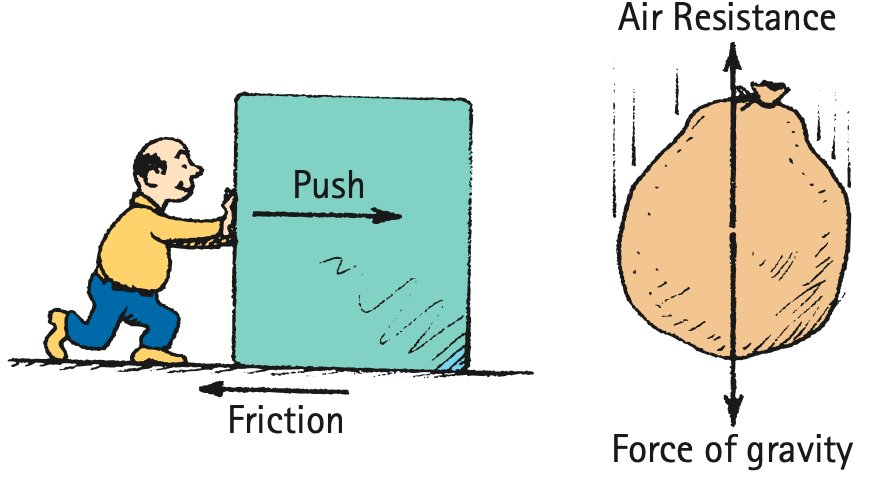

Review how net force and mass determine acceleration, how friction and air resistance change motion, how Newton’s Third Law describes interactions, and how projectile motion separates into horizontal and vertical components.
Unit at a Glance
What ties Unit 3 together?
Unit 3 explains why motion changes: forces interact, net force and mass set acceleration, real-world resistive forces modify that acceleration, and the same force ideas explain falling, collisions, systems, and projectile motion.
1Find the causeNet force and mass determine acceleration.
→
2Add real forcesFriction, weight, support, and air resistance affect net force.
→
3Track interactionsThird-law force pairs act on different objects.
→
4Separate componentsProjectile motion combines horizontal inertia with vertical gravity.
Unit Vocabulary
Words worth knowing cold
These terms are grouped by the section idea they support.
Force and Acceleration
forcenet forceaccelerationmassdirectly proportionalinversely proportionalNewton’s Second Law
Friction and Real-World Forces
frictionstatic frictionsliding frictionfluid frictionair resistanceinertiaweightsupport force
Falling Motion
free fallgravity$g$nonfree fallterminal speedfrontal area
These are the complete symbolic relationships allowed by the Unit 3 assessment plan.
Newton’s Second Law
$F_{\text{net}}=ma$
Net force and mass determine acceleration; acceleration points with the net force.
Acceleration from force and mass
$a=\frac{F_{\text{net}}}{m}$
Use when net force and mass are known.
Mass from force and acceleration
$m=\frac{F_{\text{net}}}{a}$
Use when net force and acceleration are known.
Weight near Earth
$W=mg$
Weight is the gravitational force on an object; mass is not the same quantity as weight.
Net force with friction
$F_{\text{net}}=F_{\text{applied}}-F_f$
For a simple one-dimensional push opposed by friction; signs/directions still matter.
Falling with air resistance
$F_{\text{net}}=W-F_{\text{air}}$
For downward weight and upward air resistance in a simple vertical model.
Horizontal projectile motion
$x=v_xt$
Use for the horizontal component when air resistance is ignored and horizontal velocity is constant.
Vertical drop from rest
$y=\frac{1}{2}gt^2$
Use for the vertical drop from rest under constant gravitational acceleration.
Keep the model conditions straight: friction and air resistance formulas shown here are simple one-dimensional models, and projectile component formulas assume the ideal conditions stated in the prompt.
Students will explain how friction, mass, and weight affect real-world motion.
I can…
I can explain friction as a force that opposes motion or attempted motion.
I can distinguish static friction from sliding friction.
I can explain why an object can remain at rest even when pushed.
I can distinguish mass from weight.
I can explain how friction changes the net force on an object.
Summary
Friction is a contact force that opposes sliding or attempted sliding and changes the net force.
Static friction acts before sliding and can adjust up to a maximum; sliding friction acts once surfaces slide and is usually smaller than the maximum static friction.
An object can remain at rest while pushed because static friction can balance the applied force.
Mass measures inertia and stays the same with location; weight is the gravitational force and can change with local gravity.
$W=mg$ models weight, and $F_{\text{net}}=F_{\text{applied}}-F_f$ models a simple one-dimensional push against friction.

Real-world forces such as friction and air resistance reduce or redirect the net force available to change motion.
Section vocabulary:frictionstatic frictionsliding frictionfluid frictionair resistancemassinertiaweightsupport force
DOK 1
Distinguish friction types, mass, weight, and support force.
DOK 2
Calculate net force with friction or weight in familiar situations.
DOK 3
Explain constant-velocity force balance or why mass and weight are different.
DOK 4
Design or defend a model that distinguishes static from sliding friction.
Common traps to avoid
Friction always equals the push
Static friction may match a push below its maximum, but unbalanced situations do not require equal forces.
Static = sliding friction
Static friction adjusts before sliding; sliding friction acts after motion begins and is usually smaller than maximum static friction.
Mass and weight are interchangeable
Mass measures inertia in kilograms; weight is a gravitational force in newtons.
More contact area always means more friction
In the simple dry-sliding model used here, contact area is not the controlling variable students should assume.
Students will distinguish free fall from nonfree fall and explain how air resistance affects falling motion.
I can…
I can explain that free fall means gravity is the only significant force acting.
I can explain why objects in free fall accelerate at $g$ when air resistance is ignored.
I can explain why falling through air can produce acceleration less than $g$.
I can describe terminal speed as constant speed reached when air resistance balances weight.
I can compare falling objects with different amounts of air resistance.
Summary
Free fall means gravity is the only significant force acting.
At the same location, objects of different masses share the same ideal free-fall acceleration because gravitational force and inertia increase in the same ratio.
When air resistance acts upward, it reduces the downward net force, so acceleration can be less than $g$.
$F_{\text{net}}=W-F_{\text{air}}$ models simple downward falling with upward air resistance.
At terminal speed, air resistance equals weight, net force and acceleration are zero, and the object continues downward at constant speed.
Air resistance opposes the downward motion, reducing the downward net force compared with ideal free fall.
Section vocabulary:free fallgravity$g$air resistancenet forcenonfree fallterminal speedfrontal area
DOK 1
Classify free fall, nonfree fall, and terminal-speed situations.
DOK 2
Find net force when weight and air resistance act in opposite directions.
DOK 3
Explain why gravity still acts at terminal speed and why zero acceleration does not mean zero velocity.
DOK 4
Build a force-and-motion model for a falling object as air resistance changes.
Common traps to avoid
Heavier means faster in free fall
In the ideal model, larger gravitational force is paired with proportionally larger mass, giving the same $g$.
Gravity stops at terminal speed
Gravity still acts; air resistance has grown to equal weight.
Zero acceleration means stopped
Zero acceleration means constant velocity, which can be nonzero.
Air resistance is constant
Air resistance generally grows with speed and depends on shape/frontal area.